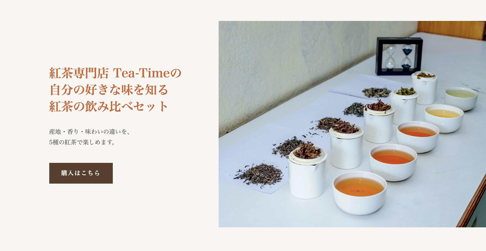
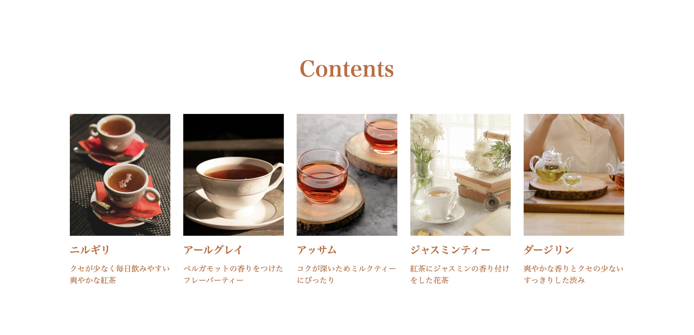
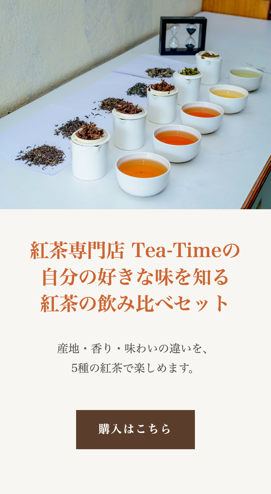
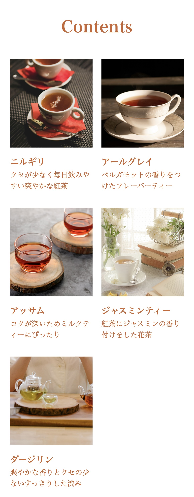

Desktop View

Work Info
Key Section
作成する際、特に工夫した部分です。1枚目はFV（ファーストビュー）、2枚目はContentsセクションです。


Mobile Design
スマートフォン表示では読みやすさを重視し、余白と縦の流れを意識して調整しています。


LP制作
作成する際、特に工夫した部分です。1枚目はFV（ファーストビュー）、2枚目はContentsセクションです。


スマートフォン表示では読みやすさを重視し、余白と縦の流れを意識して調整しています。


現在、実績を準備中です。
新しい制作物が完成次第、随時更新していきます。